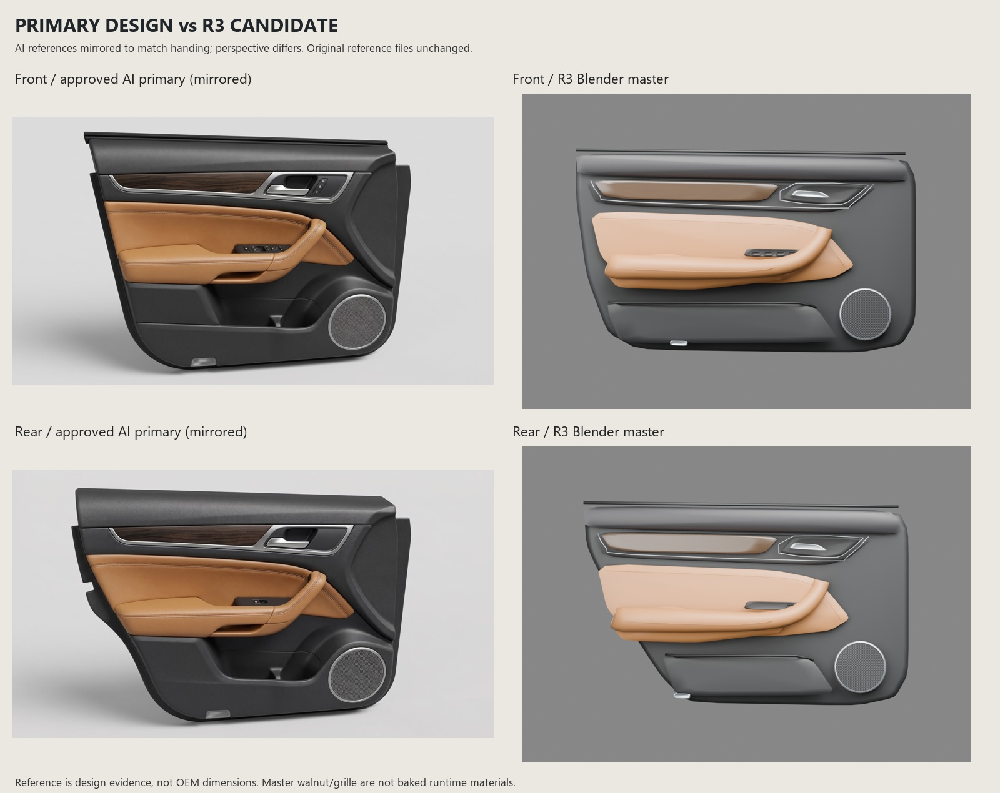
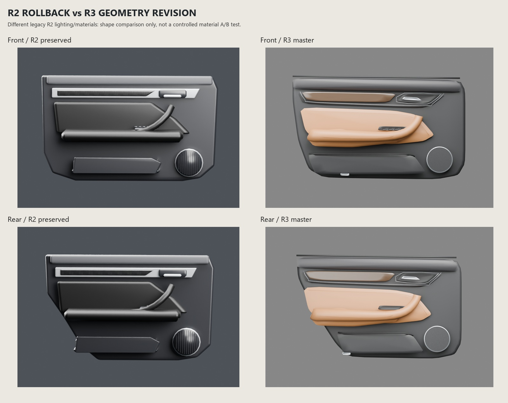

AUTOLAB / DOOR REVIEW / R3
Geometry revised. Visual acceptance open.
Offline technical PASS: 79,004 triangles, 22 primitives, 10 materials.
Only 996 triangles remain. No next cabin milestone. These are Blender master renders; procedural wood and grille details are not baked into the runtime GLBs.
Primary references and candidate
Approved AI design images mirrored only to align handing. Perspective differs.

Inspection views
Neutral area lighting, Cycles 48 samples, AgX exposure 0. Click images for full resolution.
Diagnostic legend
Ochre: secondary upholstery. Blue: upper padded dashboard-trim binding. Grey-green: structural plastic. Rose: decorative carbon binding (wood only in master). Silver: metal. This image does not prove material quality.
R2 preserved
Different legacy lighting and materials; use this comparison for shape changes only.

Review remains open. Pocket depth, armrest support, seam definition and master/runtime material parity are unresolved.